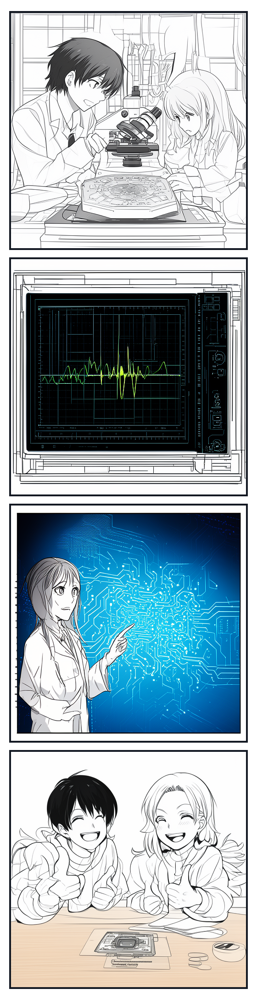
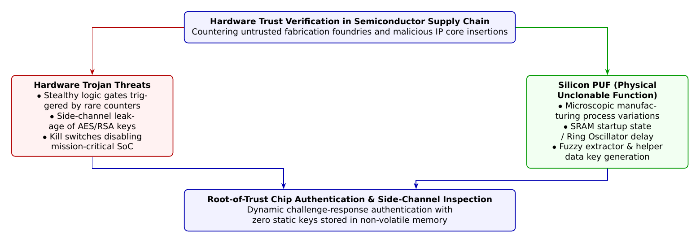

🎨 4コマ漫画挿絵（文字なし）
AI高解像度生成
▲ 【挿絵】青葉台高校 情報科学部＆帝都科学大学サイバーディフェンス・ラボでの実践シーン
📖 小説本文
### 1. ナノメートル回路に潜む時限爆弾
横浜国立大学先端科学高等研究院（IAS）のハードウェア評価ラボには、高精度オシロスコープの微細な駆動音と、走査型電子顕微鏡の真空ポンプの低重音が響いていた。
「蓮、さっきの暗号アクセラレータSoC、供給電圧を公称値の3.3Vから微小ステップで降圧させたときの過渡電流波形、何かが引っかからないか？」
白衣の腕をまくった城崎悠真が、複数プローブが接触するテストボードのオシロスコープ画面を指差した。
蓮は黒縁メガネを押し上げ、拡大されたスイッチング波形の立ち上がりエッジを食い入るように見つめた。 「……おかしいです。AESの最終ラウンド（AddRoundKey）直後、クロックサイクル第10周期の消費電力に、わずか38ピコ秒の微小なパルスが周期的に重畳しています。論理シミュレーションのRTL記述では、この遷移タイミングに電流ピークは存在しないはずです」
横からオシロスコープのトリガを調整していた葵が息を呑んだ。 「それって……チップ設計図にはない回路が、シリコンダイの上に物理的に焼き付けられているってこと？」
「おそらく『ハードウェア・トロイの木馬（Hardware Trojan）』だ」 悠真が冷静に告げた。 「近年の半導体製造はファブレス化が進み、海外の非信頼ファウンドリへフォトマスクデータを委託することが標準化している。悪意ある製造業者がマスク露光工程で数十個の論理ゲートを追加し、極めて稀なカウンタ値や特定のペイロード文字列が入力された時だけバックドアを開くトリガー回路を忍ばせたら、機能テストを完全にすり抜けて市場に出回ってしまうんだ」
---
### 2. シリコンの宿命：微小ばらつきの数理
「製造後のチップを破壊せずに、内部に仕込まれたトロイを見破って、正当なシリコンチップであると証明する手段はないんですか……？」 結衣が不安そうに尋ねる。
「そこで登場するのが、シリコン自体の『DNA』とも言える物理複製困難関数——PUF（Physical Unclonable Function）だ」 悠真はホワイトボードにナノスケールのMOSFET断面図とSRAMセルのインバータ対を素早く描いた。
「半導体露光工程がどれほど精密化しても、原子スケールで見ればシリコン格子内の不純物ドーピング濃度やゲート酸化膜の厚みには、人間が制御不可能なナノメートル単位のランダムな物理的ばらつき（Manufacturing Process Variations）が不可避に生じる。 例えば、SRAMセルに電源を投入した瞬間（Power-on State）、左右のインバータの閾値電圧 $V_{th}$ の微小差によって、あるセルは必ず『0』で立ち上がり、別のセルは必ず『1』で安定する。この初期値マップはチップごとに完全にユニークで、偽造も複製も数学的・物理的に不可能なシリコンの指紋になるんだ」
結衣の瞳が輝いた。 「チップ内の不揮発性メモリ（フラッシュやEEPROM）に秘密鍵を書き込んで保存しておく従来の方式だと、電子顕微鏡によるプローブ攻撃やサイドチャネル攻撃で鍵を直接読み取られる危険があります。でも、PUFなら『鍵を保存せず、必要な瞬間にシリコンの物理特性から鍵をその場で生成して消し去る』ことができるんですね！」
---
### 3. ノイズとの闘い：Fuzzy Extractorの幾何学
「ただし、現実の物理世界には熱雑音（Thermal Noise）や電源電圧の揺らぎがある」 蓮が懸念を口にした。 「室温が変化すれば、境界線付近のSRAMセルの立ち上がり値が反転して、ビットエラー（ビットフリップ）が発生します。そのままでは暗号鍵として使えません」
「その通りだ。だからこそ『Fuzzy Extractor（曖昧抽出器）』という誤り訂正符号アルゴリズムを組み合わせる」 悠真が数式を展開した。
$$\text{Gen}(w) \rightarrow (R, P), \quad \text{Rep}(w', P) \rightarrow R$$
「登録フェーズ（Enrollment）でPUFから読み出した生ビット列 $w$ から、安全なランダム鍵 $R$ と公開ヘルパーデータ $P$ を生成する。運用フェーズ（Reproduction）では、温度変化でノイズの載ったビット列 $w'$ が得られても、ヘルパーデータ $P$ を使ってBCH符号やReed-Solomon符号のシンドローム復号を行うことで、完全に同一の暗号鍵 $R$ を一意に復元できる。しかもヘルパーデータ $P$ 自体からは元の秘密鍵 $R$ の情報が情報理論的に漏洩しない設計になっているんだ」
---
### 4. 信頼の礎石（Root of Trust）
蓮は直ちにテスト用FPGAボードから抽出したSRAM PUFビット列を解析スクリプトに通した。 「チップID固有のハミング距離検定（Inter-chip Hamming Distance）を実行します……平均距離は49.98%！理想的な二項分布に極めて近く、チップ固有の独立性が確認できました！」
さらに、葵が過渡電流波形を主成分分析（PCA）にかけて、正常チップの電流フィンガープリントと疑わしいチップを比較した。 「……見つかったわ！トロイが仕込まれたチップは、待機時のリーク電流分布が正常群から統計的有意差 $5\sigma$ 以上外れている！シリコン指紋の認証とサイドチャネル特性の二重照合で、トロイが混入したロットを1個残らず特定できるわ！」
ラボの大型ディスプレイに、全数検査の合否ステータスが緑色のチェックマークで次々と埋まっていく。
「目に見えないナノスケールの回路であっても、物理法則と数理暗号が組み合わされば、偽りを決して許さない」 葵と蓮、結衣が笑顔で顔を見合わせた。 シリコンダイの上に刻まれた微細な鼓動は、今日もサイバー空間と現実世界を繋ぐ揺るぎない信頼の砦となっていた。
📊 セキュリティ構造図解 (TikZ LuaLaTeX生成)
国家安全基準・工学図解
▲ 【技術構造図】IPAデジタルスキル標準・国際規格に準拠した仕組みのモデル化